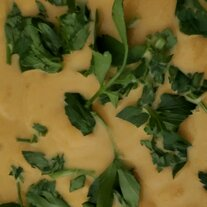

Description
This delicious, cream-like soup is served at our family's Thanksgiving dinner every year.
Ingredients
- 6 cups chicken stock
- 1 ½ teaspoons salt
- 4 cups pumpkin puree
- 1 teaspoon chopped fresh parsley
- 1 cup chopped onion
- ½ teaspoon chopped fresh thyme
- 1 clove garlic, minced
- ½ cup heavy whipping cream
- 5 whole black peppercorns
Steps
- Step1
stock, salt, pumpkin, onion, thyme, garlic, and peppercorns.
Bring to a boil, reduce heat to low, and simmer for 30 minutes uncovered.
- Step2
the soup in small batches (1 cup at a time) using a food processor or blender.
- Step3
Return to pan, and bring to a boil again. Reduce heat to low, and simmer for
another 30 minutes, uncovered.Stir in heavy cream.
Pour into soup bowls and garnish with fresh parsley.
Return to top
Go Home page